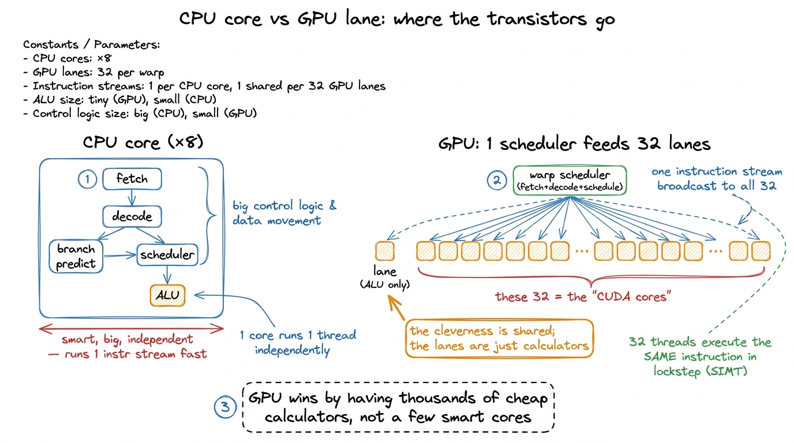
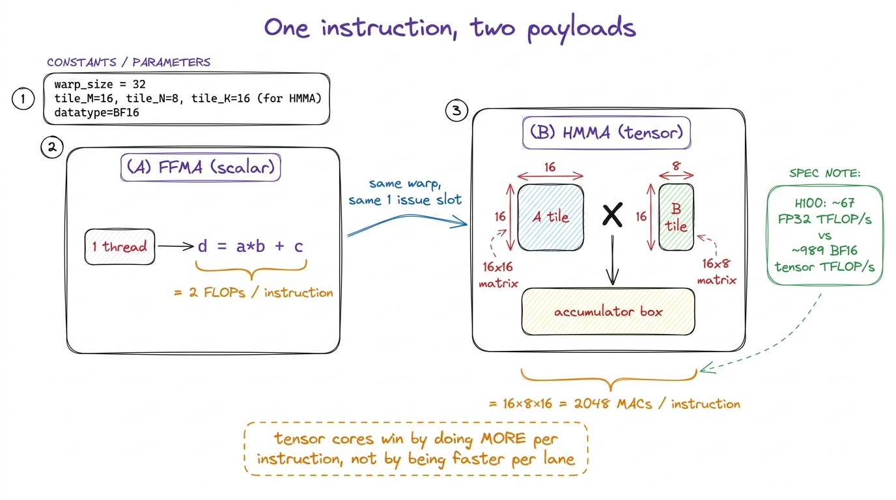
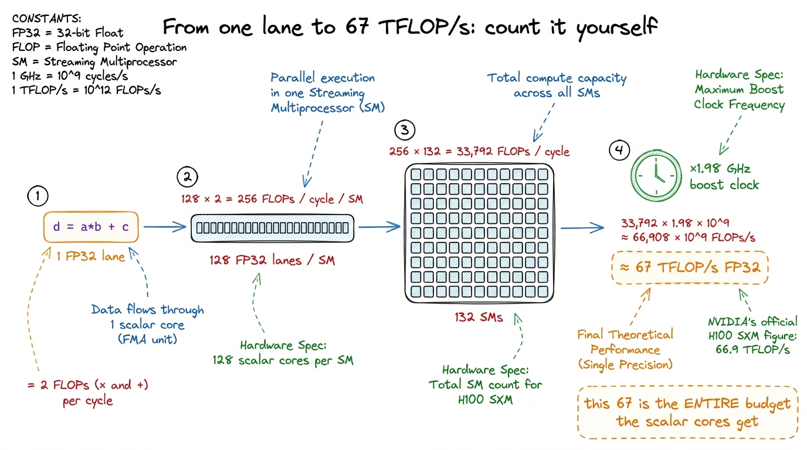

CUDA cores & the FP32/INT pipes
For most of the GPU's history, the CUDA core was the GPU. When you multiplied two matrices, when you ran an activation, when you did anything at all, you were feeding scalar floating-point units one number at a time and counting on there being thousands of them. That mental model is now mostly wrong, and getting it wrong is one of the most common ways a good engineer writes a slow kernel. On an H100, the overwhelming majority of the FLOP/s do not live in the CUDA cores at all. But the CUDA cores never went away, and knowing exactly what they are still good for is the difference between a kernel that hits the roofline and one that leaves 90% of the chip idle.
This article is about the scalar side of the GPU: the FP32, FP64, and INT32 pipes, the fused multiply-add they were built around, why they lost their crown to the tensor cores, and the specific, unglamorous work they still do better than anything else on the die.
What a CUDA core actually is
A CUDA core is a scalar arithmetic unit — an ALU that executes one instruction on one pair of operands and produces one result. It is not a "core" in the CPU sense at all; it has no instruction fetch, no decode, no scheduler of its own. It is a lane. The Streaming Multiprocessor (SM) that contains it owns the control logic, and its warp scheduler issues one instruction to a group of 32 lanes at once — a warp — with each lane applying that same instruction to its own registers.1 This is why "CUDA core" is a slightly dishonest marketing term. NVIDIA's core count is really a lane count. The unit that decides what to execute — the warp scheduler — is far scarcer: four per SM on the H100, one per 32 lanes. This is SIMT execution: single instruction, multiple threads. The cores are the "multiple threads" part.
Physically, the SM does not contain one uniform pool of "cores." It contains several different kinds of scalar pipe, in different quantities, and NVIDIA's headline count only tells you about one of them. On the H100, each SM has:
- 128 FP32 units — the single-precision floating-point pipes. This is the number NVIDIA reports as "CUDA cores per SM," and it is accurate for FP32 specifically.
- 64 INT32 units — half as many integer pipes.
- 64 FP64 units — half as many double-precision pipes, running FP64 at half the FP32 rate for the HPC and national-lab crowd. (Consumer Ada cards ship a token 1/64th-rate FP64 unit instead, because no game needs doubles.)
So when someone says an H100 SM has 128 CUDA cores, they mean 128 FP32 lanes. The integer and double-precision hardware is real, separately counted, and — crucially — physically distinct, which is what makes the next fact possible.

figure rendering · One SM, drawn to scale by count. The scalar pipes outnumber the tensorFMA: the instruction the whole thing is built around
Everything about the FP32 pipe is organized around one operation: the fused multiply-add (FMA), d = a * b + c. It computes a product and a sum in a single instruction, with a single rounding step at the end, and — this is the part that matters for counting — it retires in one throughput cycle per lane.
FMA is the atom of numerical computing because the inner loop of almost everything is a dot product, and a dot product is nothing but a running sum of products: acc += a[k] * b[k]. That is literally one FMA per term. When you look at the naive GEMM kernel and see acc += A[m*N+k] * B[k*N+n], you are looking at the compiler emitting one FFMA instruction per iteration of the k loop. The entire scalar throughput of the chip is, to first order, its FMA throughput.
Because an FMA does two floating-point operations (a multiply and an add) per instruction, the FLOP-counting convention doubles the unit count. One H100 SM has 128 FP32 lanes, each retiring one FMA per cycle, which is 128 × 2 = 256 FLOPs per cycle per SM. Multiply by ~132 SMs and a ~1.98 GHz boost clock and you land around 67 FP32 TFLOP/s for the whole chip.2 The exact figure NVIDIA quotes for H100 SXM FP32 is 66.9 TFLOP/s. That is the honest, no-tricks single-precision number — and it is the ceiling every non-tensor-core kernel on the chip is fighting against. Hold onto that 67 number. It is the entire budget the scalar cores get.
Why the CUDA cores are no longer where the FLOPs live
Here is the uncomfortable comparison. The scalar FP32 pipes on an H100 deliver about 67 TFLOP/s. The four tensor cores on each SM deliver about 989 TFLOP/s of BF16 with FP32 accumulation, no sparsity tricks assumed. That is a factor of roughly 15× on the same silicon — and if you compare against the FP16/FP8 tensor modes it is worse still.3 The glossary's shorthand is "tensor cores do ~100× the FLOP/s of CUDA cores," which is true if you compare the lowest-precision tensor mode against FP64 or against a single lane. Apples-to-apples — dense BF16 tensor vs dense FP32 scalar on the H100 — the ratio is about 15×. Either way the conclusion is identical: the FLOPs are not in the scalar pipes anymore.
How does four of anything beat 128 of something else by 15×? Because a tensor core is not a scalar unit. Each tensor-core instruction is a matrix multiply-accumulate (MMA) that operates on whole tiles at once. The HMMA instruction a warp issues performs on the order of 16 × 8 × 16 = 2048 multiply-accumulates in one shot, cooperatively across the 32 threads of the warp — 64 MACs per thread per instruction, versus the one FMA per thread an FFMA gives you. The tensor core amortizes instruction fetch, decode, and operand routing across a hundreds-of-MAC payload, and it hard-wires the reduction network that a scalar dot product has to walk one FMA at a time.

figure rendering · The scalar pipe does 2 FLOPs per instruction; the tensor core does thoThis is why the three regimes framing matters so much. If your kernel is a big matmul and you write it with FFMA on the scalar cores, your roofline's ceiling is 67 TFLOP/s — you can hit 100% of that and still be leaving ~93% of the chip's arithmetic on the table. The tensor cores raise the roof. Reaching them is the entire back half of the GEMM ladder, and it is the reason even a well-tuned FP32 kernel can approach the scalar roofline and still sit an order of magnitude below cuBLAS, because cuBLAS has already moved on to a completely different, tensor-core-based roofline.
So when do the scalar cores still matter?
If the tensor cores own the FLOPs, why care about the CUDA cores at all? Because a huge amount of real GPU work is not a matrix multiply, and none of it can touch a tensor core. Four categories keep the scalar pipes essential:
Elementwise and reduction math. Activations (gelu, silu), normalization, residual adds, dropout masks, the epilogue of every GEMM — all of it is elementwise, and elementwise ops go through the FP32 pipe one FMA at a time. A tensor core cannot add a bias vector. These ops are memory-bound anyway, so their low scalar FLOP/s ceiling is not the bottleneck — but the scalar cores are the only hardware that can run them at all, which is exactly why fusing them into a tensor-core GEMM's epilogue is such a big win.
Addressing and control. Every load and store needs an address computed: A[m*N + k] is an integer multiply-add on the INT32 pipe before the float ever arrives. Loop counters, predicates, bounds checks (if (m < N && n < N)), pointer arithmetic for shared-memory tiles — this is all integer scalar work that runs alongside the float work.
Transcendentals and special functions. exp, log, sin, sqrt, rsqrt, tanh — the guts of softmax, attention, and RoPE — are evaluated on the Special Function Unit (SFU), a separate low-throughput scalar pipe (four per SM). There are so few SFUs that a softmax-heavy kernel can bottleneck on exp throughput while the tensor cores and even the FP32 pipes sit idle.4 With only four SFUs per SM versus 128 FP32 lanes, transcendental throughput is a small fraction of the FP32 FMA rate — and the compiler often expands one transcendental into several SFU ops plus polynomial-refinement FMAs, widening the gap further. If a profile shows you compute-bound but the tensor cores are cold and the SFU is pegged, this is your culprit.
Concurrent integer + float issue. Since Turing, the scalar datapath can co-issue an FP32 instruction and an INT32 instruction in the same cycle, because they are physically separate pipes. On the H100's 128-FP32 / 64-INT32 split, this is why address arithmetic is often "free": the INT32 pipe chews through your index math on cycles the FP32 pipe is busy with FMAs, so a well-scheduled kernel hides all its addressing behind its real compute.

figure rendering · The scalar side is not one ceiling but three, and the tensor cores towA well-written kernel overlaps its addressing with its arithmetic and pays almost nothing for the index math.
The one habit this section buys you
Before you optimize any kernel, ask which pipe it is actually going to run on. If the answer is "a big dense matmul," the scalar FP32 count is irrelevant and your only real target is the tensor cores — anything you do on the CUDA cores is a rounding error. If the answer is "elementwise" or "reduction" or "softmax," the tensor cores are irrelevant, you will be memory- or SFU-bound, and the game is bytes moved and special-function throughput, not FLOPs.
The failure mode I see most is treating "compute-bound" as one thing. It is not. You can be compute-bound against the 67 TFLOP/s scalar roof and think you are done, when the tensor cores could give you a 15× taller roof for the same problem. Naming the pipe — FP32, INT32, tensor, or SFU — turns the vague word "compute" into a specific ceiling you can actually measure against.
That distinction is the whole reason the next articles split into two threads: the tensor-core path, where we chase that 989 TFLOP/s roof one wgmma at a time, and the memory path, where the scalar cores are plenty fast and the entire fight is getting bytes to them. Both start from the same question the three regimes taught us to ask — but now you know that "compute" is really four different pipes wearing one name.